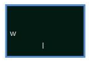

Rectangle
Area of Rectangle
A quadrilateral is a called rectangle, if it is a parallelogram and each angle measures 90 degrees.
A rectangle is a four sided and closed figure. In a rectangle all opposite sides are parallel and equal. Also in a rectangle all the adjacent sides are perpendicular.
A rectangle is a quadrilateral and also a parallelogram.
Let us consider a rectangle with length x units and width y units.
Area of the above rectangle = L × W
Example 1: Given a rectangle where the length is 5cm and the width is 3cm. Find the area of this rectangle.
Solution: To calculate the area, we can use the formula for the area of a rectangle:
A = L×W
Since the length is given as 5cm, we can substitute L with 5. Similarly, since the width is given as 3cm, we can substitute W with 3. After doing so, we can calculate A, as shown below:
A = L×W
A = 3×5
A = 15
Now, the calculated number 15 only has a meaning if we include the unit for it. Since the given length and width are in cm, the unit for area will be cm2. Hence:
A = 15 cm2
Example 2: Find the area of the garden, length and width of the garden are respectively 600m and 400m.
Solution:
Area of garden = Length×Width
A = L×W
A = 600×400
A = 240000 m2
Example 3: A white paper has a size of length 20 cm and width 15 cm. Jack has drawn a rectangle in the center of the paper which is 10 cm in length and 5 cm in width and painted the entire rectangle in violet color. Find the area of the violet colored portion and area of white portion.
Solution: We know that area of a rectangle is length × width.
Here the given paper has the shape of a rectangle.
So the area of the paper is = 20cm x 15cm = 300cm².
And the area of the violet colored rectangle = 10cm x 5cm = 50cm².
So the area of the white portion = 300cm² - 50cm² = 250cm².
Example 4: The length of a rectangular shaped garden is 250 meters and then the width of the garden is 175 meters. Find the area of the rectangular garden.
Solution: The length of the garden = 250 meter
The width of the garden = 175 meter
Area of the rectangular garden = 250 x 175
= 43,750 m2
Example 5: In an auditorium the floor is covered with a rectangular carpet, which is measured 9 m in length and 6 m in width. Calculate the area of the rectangle carpet.
Solution:
Given that, length (L) of carpet =9m and Breadth of a carpet (W) =6m
Area of rectangle = length Breadth
Area = L × W = 9 × 6 = 54 m2
Perimeter of Rectangle

In rectangle, the distance around the outside of the rectangle is known as perimeter. A rectangle is 2-dimensional; however, perimeter is 1-dimensional and is measured in linear units such as feet or meter etc.
The perimeter of a rectangle is the total length of all the four sides.
Perimeter of rectangle = 2L + 2W.
Example 1: Rectangle has the length 13 cm and width 8 cm. solve for perimeter of rectangle.
Solution:
Given that:
Length (l) = 13 cm
Width (w) = 8 cm
Perimeter of the rectangle = 2(l + w) units
P = 2(13 + 8)
P = 2 (21)
P = 42
Thus, the perimeter of the rectangle is 42 cm.
Example 2: If a rectangle's length is 2x + 1 and its width is 2x – 1. If its area is 15 cm2, what are the rectangle's dimensions and what is its perimeter?
Solution:
We know that the dimensions of the rectangle in terms of x:
l = 2x + 1
w = 2x – 1
Since the area of a rectangle is given by:
A = l * w
We can substitute the expressions for length and width into the equation for area in order to determine the value of x.
A = l * w
15 = (2x + 1) (2x -1)
15 = 4x2 – 1
16 = 4x2
x = ±2
Note that the value of x must be positive and therefore in our case, the value of x is 2. And now we have:
l = 5 cm
w = 3 cm
Therefore, the dimensions are 5cm and 3cm.
Now, substituting these values in the formula for perimeter, we will get
P = 2l + 2w
P = 2(5)+2(3)
P = 10+6
P = 16 cm
Example 3: Find the area and the perimeter of a rectangle whose length is 24 m and width is 12m?
Solution:
Given that:
length = L = 24m
width = W = 12m
Area of a rectangle:
A = L × W
A = 24 × 12
A = 188 m2
Perimeter of a rectangle:
P = 2L + 2W
P = 2(24) + 2(12)
P = 48 + 24
P = 72 m
Example 4: Find the area and perimeter of a rectangle whose breadth is 4 cm and the height 3 cm.
Solution:
Area = b×h = 4×3 = 12 cm2.
Perimeter = 2(b) + 2(h) = 2(4) + 2(3) = 8 + 6 = 14.
Example 5: Calculate the perimeter of the rectangle whose length is 18cm and breadth 7cm
Solution:
Given that:
L = 18 cm
B = 7 cm
Perimeter of rectangle = 2(length + breadth)
P = 2 (L + B)
P = 2 (18 + 7)
P = 50 cm
Example 6: Find the perimeter of rectangle whose length is 6 inches and width is 4 inches.
Solution:
P = 2(L + B)
P = 2(6 + 4)
P = 20 in
Example 7: A boy walks 5 times around a park. If the size of the park is 100m by 50m, find the distance the boy has walked. If he walks 100m in 5 minutes, how long will it take for him in total?
Solution:
Given that:
Length = L = 100m
Width = W = 50m
Rounds = 5
Time per 100m = 5minutes.
Perimeter of the park:
P = 2 L + 2 W.
P = 2 × 100 + 2 × 50
P = 200 + 100
P = 300 m
Total distance walked = 5 × Perimeter of the park.
= 5 × 300
= 1500 meters
Total time taken = Total distance walked × time taken to walk 1m.
= 1500 × 5/100
= 75minutes or 1hr 15minutes